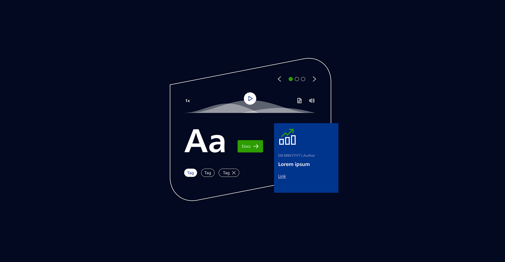
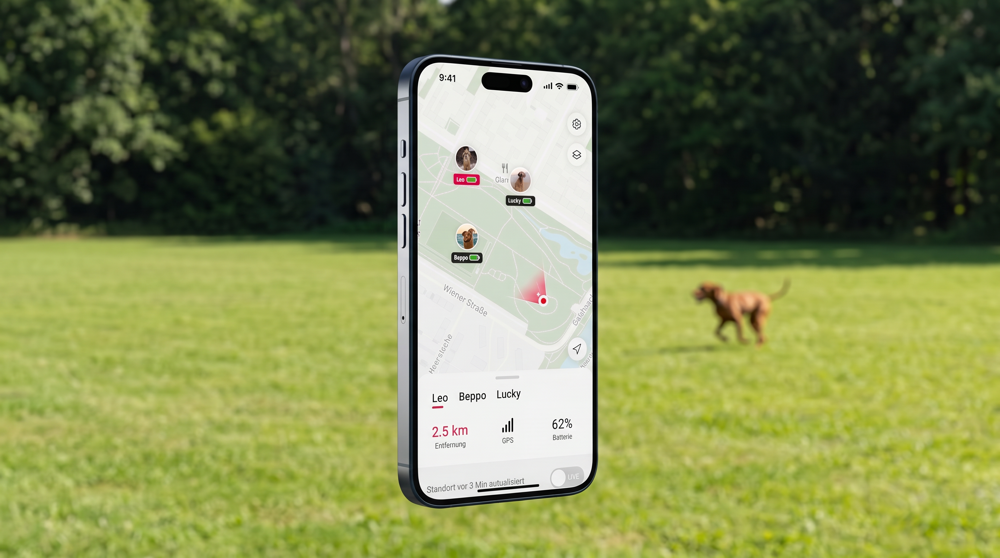
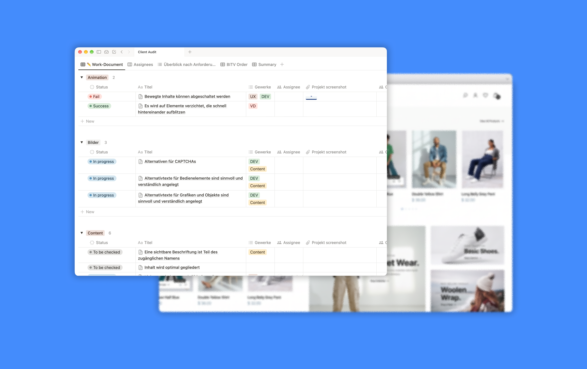

Cologne · open to remote work and relocation
Product designer with over three years of agency experience. I like to work close to the code and with the people who write it.
Work snippets
ARD Mediathek / identifying moods and motivations and weighing them with AI
- Set up and ran the Google AI Studio toolchain
- Defined the success metrics with a colleague and wrote a Python script to calculate them across 80 runs
- Both toolchains passed the criteria, and the findings went into the requirements for an MVP
Solid Design System / documentation, patterns, landing page
- Wrote the full component documentation, from use cases to accessibility requirements, in a unified structure built to scale
- Led the pattern research and found a middle ground with the client: flexible patterns, plus ready-made blocks for common forms
- Concept and design for the landing page. It's live, you can check it out here

Dog Tracker app / adapting to unexpected constraints and realigning the team
- Ran the hardware and software implementation testing, improving task flows and interactions based on the results
- Designed the route history feature and redesigned several others around the test results and real hardware specs.
- As acting UX lead, led QA with the external developers and streamlined how we worked together

Accessibility task force / preparing an agency for the new German law
- Co-led a community of practice to push accessibility throughout the agency, running workshops, open rounds and consulting sessions
- Built a toolbox for designers, developers and project managers to apply accessibility best practices and test their products
- Audited client products and supported development teams during relaunch

About me
I'm a product designer with a background in cultural studies, linguistics and architecture. It sounds like three different paths, but for me it's felt like one question asked three ways: how do people make sense of reality?
I work best in a team, close to the people who build the product. I like to understand the technical side early, ask questions and keep the conversation open, even when people disagree.
After a few years in an agency, I'm looking for an in-house team where I can stay with a product and keep improving it. I code a little, enough to build this site with some help from AI, and I'd like to learn more. Outside work I'm interested in film, music, urbanism and conflict mapping.